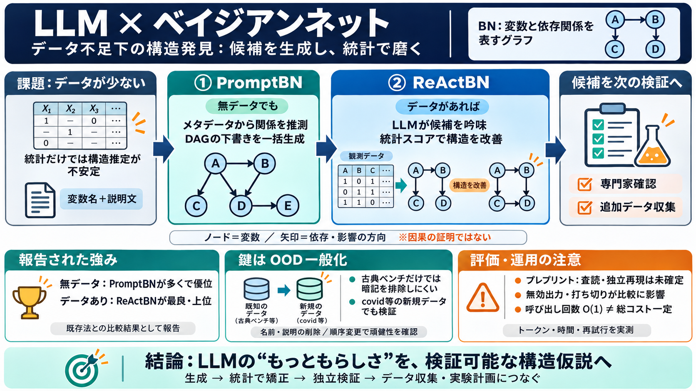

bnlearn - Bayesian network structure learning
© 2026 Marco Scutari. The contents of this page are licensed under the Creative Commons Attribution-Share Alike License…

データ不足×構造発見
観測データ（サンプル）が少ない／無い状況で、ベイジアンネットワーク（BN）の構造を生成・改善する研究を整理します。
なぜ困る？
通常のBN構築は観測データに依存しやすく、データが無い／弱いと構造推定が不安定になります。
核となる発想
LLMに変数名・説明文から関係を推測させ、データ不足を「意味的な初期化」で補います（英: metadata、日: メタデータ）。
2段階の役割分担
無データ寄りではPromptBNが一括生成し、データあり寄りでは統計スコアでReActBNが洗練する、という使い分けが焦点です。
ベンチマーク群
Asia/Cancer/Child/Insurance/Alarm/Hailfinderのような古典に加え、blockchain/covid/disputed3など新規データセットでも評価します。
一番重要な軸
古典だけだと訓練データの暗記（記憶）を完全に排除できないため、新規データで「偶然の一致」ではない汎化を確認する狙いがあります。
報告される結果
無データ設定ではPromptBNが既存のLLM-only法より多くで優位、データありではReActBNが複数データセットで最良または上位という報告です。
特にcovidの新規データでPromptBNが大幅改善した点が、OOD一般化の証拠として位置づけられています。
それでも注意点
arXivプレプリント段階であり査読確定とは限らず、試行打ち切りや定性評価など、条件間の厳密比較は完全には保証されない可能性があります。
計算量の見方
LLM呼び出し回数を見れば\(\mathcal{O}(1)\)と主張していても、トークン長・推論時間・失敗率・再試行まで含めると実コストは一定とは限りません。
pairwise型の\(\mathcal{O}(N^2)\)より有利になり得る、という主張は理解できる一方で実測が重要です。
暗記テストの補強
VarNameのみ／VarDescriptionのみ／ScrambleOrderなどの汚染検証で、完全な暗記を避ける補強材料を提示しています。
ただしLLMは名前・説明・常識を統合するため、「暗記していない」を断定するのは難しいです。
あなたの懐疑の核
LLMは観測データの代わりに意味的手がかりで候補を作るため、それ自体は「それらしい補完」に見えます。
BNを「書く」より、生成物を通じて次のデータ獲得へつなげる道具化が重要、という見方も整合します。
まとめ
結論として、LLMをBNの中心に置き、無データではPromptBNで生成し、データありではReActBNでスコア洗練する統合は実用的な価値が見込まれます。
データ不足を「集める設計（収集・能動学習・実験計画）」まで含めて捉えると、BNの価値はさらに増します。
© 2026 Marco Scutari. The contents of this page are licensed under the Creative Commons Attribution-Share Alike License…
3.4 Data contamination test To the best of our knowledge, there is no specific test designed to evaluate the degree of c…
| Comparisons | Compare causal discovery libraries and their ability to find hidden causal relationships. | link | Podca…
property="og:description"> ## bnlearn: Bayesian Network Structure Learning, Parameter Learning and Inference [...] Baye…
An overview of structure learning approaches is beyond the scope of this document; a comprehensive assessment of state-o…
PromptBN achieves perfect recovery of small, classical nets in the zero-data regime (e.g., SHD=0 on Asia), and ReActBN o…
### Gaussian Bayesian Networks | Medium Networks (20–50 nodes) | | Name | Nodes | Arcs | Parameters | | ECOLI70 | 46 |…
and structured prompts, enables LLMs to produce more relevant and accurate outputs. Carefully constructed prompts enhanc…
| LLM+Data | 250 | PromptBN+HC | 65.80±0.84\bf 65.80\pm 0.84 | 𝟏𝟗±𝟏\bf 19\pm 1 | 9.60±1.34\bf 9.60\pm 1.34 | 79±679\pm 6…
To mitigate the risks posed by hallucinations, robust evaluation metrics for LLMs are essential. Traditional metrics lik…
7 Future work Our current experiments evaluate LLM-based meth-ods using only the names of CG nodes, without incorporatin…
# Bayesian Networks and Causal Discovery Xiaoguang Gao, Zidong Wang Entropy · 2026-04-13 · 28(4):438 · DOI: 10.3390/e2…
Feb 23, 2026 — Across all three networks, both PromptBN and ReActBN demonstrate strong generalization performance. Under…